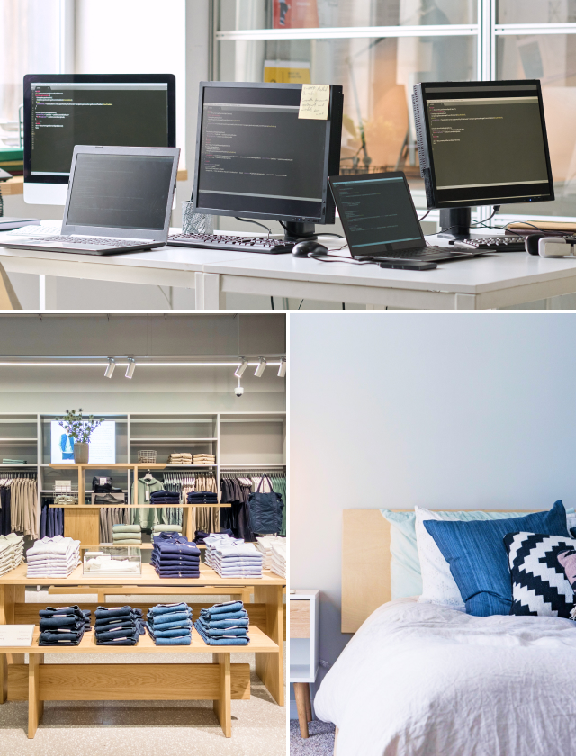

当社の強み
-

多様な業種、業態、販路を熟知
当社代表は、パソコン周辺機器、AV機器、日系カジュアルウェア、スポーツウェア、外資系カジュアルウェア、寝具など、多様な業種を実務担当者として経験してきました。加えて、B2CからB2B、ネット通販の事業責任者でした。
チャネル（販売経路）も、自社直営店舗、百貨店、GMS、ショッピングモール、ドラッグストア、専門店、家電量販店、ECモール等々、様々な販路をマネジメントしてきました。
特定の業種、特定の業態、特定の企業規模、特定の販路、に限定されない、幅広い経験と、普遍的な知見に基づいたアドバイス、サポートを提供します。 -
企業内の多様な部門・機能を熟知
当社代表は、製造業の上流から下流までのほぼ全ての機能（研究～開発～製造（工場）～営業）を直接経験しています。
加えて、システム開発、マーケティング、EC（ネット通販）、カタログ通販、需要予測・在庫管理、経営企画。更に、小売り部門（自社店舗網）のトップ、経営企画部門の立上げも務めました。
これらの広範な経験と知見により、 貴社の様々な部署の現場感を把握しながらも大局的な視点でのアドバイス、サポートを提供します。 -

様々な企業特性を熟知
企業によって、組織や意思決定プロセスから実行方法まで全く異なります。
当社代表は、伝統的大企業からスタートアップ、外資系企業、中小企業まで、実務担当者として様々な組織を経験しており、外部コンサルタントではわからない社内の組織特性を、身を以て熟知しています。
外資系企業の場合は、本国（本社）とのやりとりや、日本の事情を的確かつ説得力をもって伝えることも重要になります。それぞれの企業特性にマッチしたアドバイス、サポートを提供します。
当社の顧問実績は
こちらからご覧いただけます。
サポート形態
テーマやご要望に合わせて、様々なサポート形態が可能です。
-
壁打ち型
クライアントの考え・悩み・思いを聞きながら、「このような視点では？」「例えばこのような考え方は？」などとやり取りをしながら、クライアントが自ら解決策に思い至るような方法です。クライアントの頭の中を整理しながら、クライアントの成長にも繋がります。
- 壁打ち型の事例を見る
-
CASE 01
社長の壁打ち
若くて実行力のある2代目社長。マーケティングの知見も高く、アイデアも豊富だが、共に議論・検討できる相手がいないため、壁打ちを要望。
Point- 社長の様々なアイデアに対して、フィードバックを返しながら、アイデアを膨らませたり、他のアイデアを提案したり、方向性を見出したり、場合によっては細部のブラシュアップなどを実施した。
- 顧客調査を提案し、実施したところ、それまで自社の強みと考えていた点が全く異なっており、事業の重点課題を変更した。
- 同社の新規事業立上げにおいては、社長と共に当新規事業の顧客価値を徹底的に磨き上げて3つに絞り、最終的には有名コピーライターを紹介して、強力なキャッチコピーを制作。
- 同社初の動画広告を制作。動画広告制作経験の無い同社に代わって撮影の立会い・編集作業の監修などを実施し、YouTubeで100万回以上の再生数を記録。
-
ファシリテーション型
クライアントが複数メンバーやプロジェクトチームの場合に、メンバーの意見を引き出し、メンバー間の議論を効果的に促進しながら、プロジェクトの合意形成を図っていきます。コンサルタントはファシリテーションに徹して、議論の中から重要な論点を整理し、メンバーの意思・意見・議論を中心にワークショップを進めます。この進め方によって、メンバー全員が高い参画意識と共通認識を持ってプロジェクトを進めることが可能になります。
- ファシリテーション型の事例を見る
-
CASE 01
企業コンセプトの見直し
一部上場企業が以前から提唱している「企業コンセプト」が社内外に浸透していないという課題があり、社長からの直接のオーダー。
既に存在するコンセプトの再定義のため、商品企画、マーケティング、営業などを混じえた部署横断型のプロジェクトを提案。加えて、プロジェクトメンバーの意見・解釈を尊重しつつ、メンバーの当事者意識を高めるために「ファシリテーション型」のサポートを提案した。Point- コンセプト自体は広告代理店によってキレイな「文章」になっていたが、メンバー間ですら、その「文章の解釈」が大きく異なっていることが判明した。
- コンサルタントのファシリテーションの元、プロジェクトメンバーが各々の解釈を出し合い、議論し、意見を交わした。
- 多様な意見が出る中で、コンサルタントは焦点となる重要論点を抽出・整理し、その点に絞ってメンバーの議論を深めた。
- 論点を絞って議論していく中で、メンバー間に「あるべき共通の解釈」が形成されていった。
- あるべき共通の解釈を元に、広告代理店の文章は破棄し、プロジェクト内でコンセプトを端的/正確に表現するコピーを作るに至った。
- コンサルタントはファシリテーションに徹し、メンバーの議論を活性化させること、論点を明らかにすること、絞った論点でメンバーの議論を深めること、その中での合意形成を促すこと、に注力し、あくまでもプロジェクトメンバーがあるべき解釈に至り、コピーを生み出した、という形に導いた。
- 新たに構築された企業コンセプトに基づいて、商品企画、マーケティングコミュニケーションの検討・サポートに移行した。
-
提案型
(一般的なコンサルティングプロセス)コンサルタント自身がプロジェクト推進のイニシアチブを持ち、仮説形成・調査・分析・戦略策定までを実施します。戦略実行段階のサポートもいたします。
- 提案型の事例を見る
-
CASE 01
中堅飲食チェーンの
ブランディング売上は上がっているが、今後、ブランドを高めていきたい。従来から料理の特徴などを発信していたが、しっかりとしたブランド戦略が無かった。
Point- 社内ヒアリングをベースにいくつかの「仮説」を立て、仮説を元に、市場調査を設計～実施。調査に基づいて、自社と同業他社、顧客についての分析を実施。
- 自社の強み・弱み・顧客層・ブランドイメージ・認知経路・NPS、競合の強み・弱み・イメージ、顧客層、NPS等を>同業他社との比較を混じえて徹底的に比較・分析。
- 分析結果を踏まえて、「ブランドアイデンティティ」「ブランドプロミス」「ペルソナ」を設定。
-
「ブランドアイデンティティ」「ブランドプロミス」「ペルソナ」に基づいて以下を実施。
・あるべき店舗デザイン（外装・店頭・店内・什器・家具・小物・パネル・POP etc.）を統一
・ターゲットに伝えるべき、シンプルで強力なメッセージを作成
・ターゲットとメッセージにマッチする発信方法を実施（SNS、チラシ、看板、インフルエンサー etc.）
※クライアントとディスカッションしながら各施策を検討。施策の実務・実施は当該クライアントが担当
-
実務遂行型
提案型に加えて、戦略策定以降の「実施」段階までを担います。社内に実務担当者が不在で、企業自身による施策の実行が難しい場合などに対応いたします。
- 実務遂行型の事例を見る
-
CASE 01
中小製造業の
新規事業立上げ中小製造企業が世界初の画期的な製品を開発し、某有名コンサルティング会社がサポートしていたが、成果が出ておらず、当社に依頼があった。事実上の新事業立上げのサポート。
クライアント社内にマーケティング機能・担当者が不在だったため、実務までほぼ全ての作業を当社にて実施。Point- 市場調査（アンケート設計～調査～分析）、競合調査と、それに基づく戦略策定。
-
webサイト構築（2サイト）
制作会社選定～基本構想～ページ構成～制作ディレクション～コンテンツ制作（文章作成含む） -
カタログ作成
制作会社選定～基本構想～制作ディレクション～コンテンツ制作（文章作成含む） -
薬機法チェック
薬機法に関わる商品であったため、薬機法の専門家と連携してチェック -
リスティング広告（検索広告）
基本戦略策定～代理店選定～代理店へのオリエンテーション～LP制作～リスティング広告ディレクション～代理店の月次レポート読込み～代理店との月次ミーティング・ディレクション -
PR
大手新聞、大手雑誌、有名海外雑誌などに記事掲載 - 月次レポート作成・報告
- 問合せメールへの営業担当による返信内容の添削
以下を当社にて実施。
※webサイト・カタログのコンテンツ（文章）、営業提案資料、プレスリリースの全てを当社にて制作。
サービスの流れ
スポット支援も対応
まずはスポット的にコンサルティングを受けてみたい、とりあえず今直面している課題を解決したい、などのスポット対応も可能です。